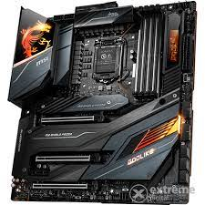

|
Az alaplap a központi vagy elsődleges áramköri lapkája egy számítógépes rendszernek vagy más összetett elektronikai rendszernek.
A legtöbb mai PC-n az alaplapra rögzíthető (azaz nem beépítve található) a mikroprocesszor, a RAM memória, a VGA, és egyéb bővítőeszközök a
megfelelő foglalatokon, síneken, csatlakozókon. Az ATX szabványú számítógép-házak elterjedésével, és gyakorlati egyeduralmával összhangban a
legtöbb külső (azaz a gép házán kívülre mutató) csatlakozó egy meghatározott méretű és helyzetű úgynevezett hátlapi csatlakozóra került. Itt a
legtöbb esetben a következőket találjuk:
Lila PS/2 a billentyűzet, zöld PS/2 az egér számára
2-4 (ritkán több) USB 1.1/2.0/3.0/3.1(Type-C)
3 vagy több 3,5 mm-es jack hangszóró kimenet(ek), vonali bemenet (line-in) és mikrofon (mic) bemenet
integrált VGA esetén D-SUB, és/vagy DVI és/vagy HDMI és/vagy DisplayPort
integrált hálózati kártya esetén általában 1 db RJ-45 UTP csatlakozó
egyre ritkábban: 1 db párhuzamos nyomtatóport, 1 vagy 2 db soros port
Az alaplapokon általában megtalálható elemek:
processzorfoglalat (általában egy, néha több processzor számára) esetleg maga a processzor
RAM memóriahelyek
ROM BIOS (csak olvasható memória, amely tápfeszültség nélkül is megőrzi tartalmát)
lapkakészlet (a memóriavezérlőt, a háttértárak illesztését és kezelését végző vezérlőt, a PCI-hidat, a valós idejű órát, a közvetlen memória-hozzáférést irányító DMA-vezérlőt, az infravörös átvitelre szolgáló kapu vezérlőjét, a billentyűzetvezérlőt, az egérvezérlőt stb. tartalmazza),
akkumulátor vagy elem (a gép kikapcsolt vagy áramtalanított állapotában is működő órát és a CMOS RAM-ot látja el energiával),
CMOS RAM (statikus memória)
bővítőkártya foglalatok,
belső és külső csatolók,
feszültségkonvertálók és -stabilizálók,
áthidaló kapcsolók (jumperek), állapotjelző LED-ek stb.

|